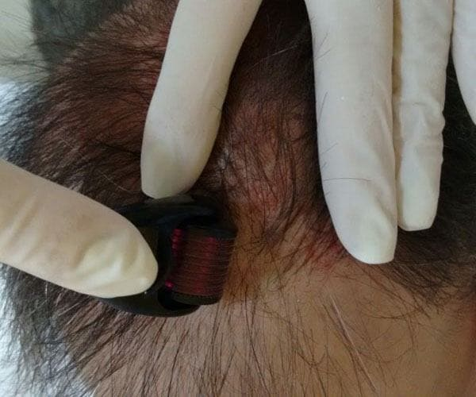
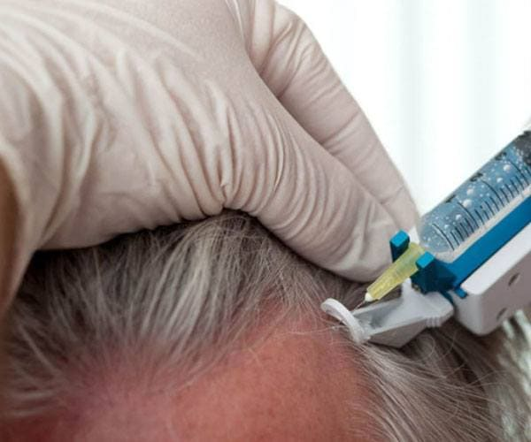
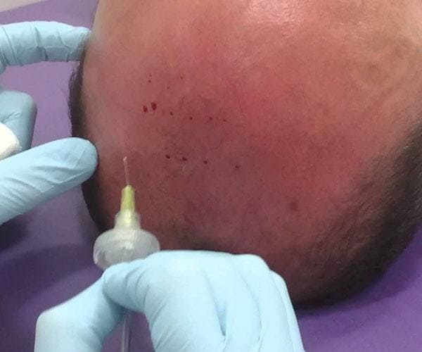
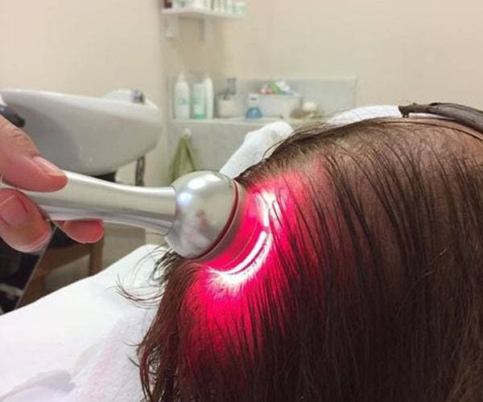

Tratamentos Capilares
Microagulhamento Capilar
|  | O procedimento com microagulhamento é inspirado na milenar técnica chinesa da Acupuntura. Partindo do mesmo princípio, o tratamento cria microlesões no couro cabeludo do paciente para estimular o local a produzir fatores de crescimento endógenos, responsáveis pelo surgimento dos novos fios. A técnica também auxilia e potencializa a absorção dos cremes e loções que são aplicadas durante o tratamento.
O combate à calvície com microagulhamento é sempre associado ao uso de medicamentos que inibem a perda de fios e estimulam o crescimento do cabelo. |
Mesoterapia
|  | Mesoterapia capilar é um tratamento estético que consiste na aplicação de substâncias logo abaixo da pele para diminuir a queda de cabelo e estimular o crescimento de fios. Primeiramente é feita uma limpeza da área que será tratada. Algumas infiltrações com seringas e agulhas são feitas onde há o depósito de substâncias homeopáticas, vitaminas, aminoácidos e outras substâncias que proporcionam crescimento saudável dos fios.
Por realizar uma injeção diretamente abaixo da pele a ação direta traz resultados mais rápidos que os métodos tradicionais por meio de comprimidos. A Mesoterapia capilar não tem restrição, contraindicação ou efeitos colaterais e não atrapalha nas tarefas do dia a dia |
Carboxiterapia
|  | Carboxiterapia capilar é a técnica que utiliza aplicação injetável de gás carbônico medicinal diretamente no couro cabeludo, com intuito de aumentar a irrigação sanguínea na raiz dos fios e estimular os folículos capilares.
É indicada em casos de queda de cabelo, principalmente o eflúvio telógeno, quando os fios na fase final de sua vida caem em grande quantidade. Também é indicado para alguns tipos de calvície, como a alopécia androgenética, aquela causada por herança genética e famosa entre os homens. Em media, após dois meses, pode se notar o crescimento de novos fios, mais grossos e fortes. Espera-se um aumento na quantidade de fios, uma maior densidade e volume. |
Led Capilar
|  | O LED capilar está indicado para qualquer tipo de queda de cabelo, independente da causa, pois atua fazendo fotobioestimulação. A luz penetra no local aplicado, atinge as células, e estimula seu metabolismo (há um aumento da produção de ATP pelas mitocôndrias). Isto se traduz em um melhor aproveitamento dos nutrientes, uma melhor eliminação de toxinas, em aceleração da divisão celular, aceleração do crescimento epitelial com melhor cicatrização, em aumento de síntese protéica, em redução de inflamação, e em estimulação do crescimento dos pêlos.
O tratamento da queda dos cabelos com LED é totalmente indolor, atóxico, não invasivo e sem qualquer tipo de efeito colateral. Fazendo o tratamento correto, os pacientes podem ter cabelos mais grossos, com mais volume, mais brilho e mais saudáveis. |